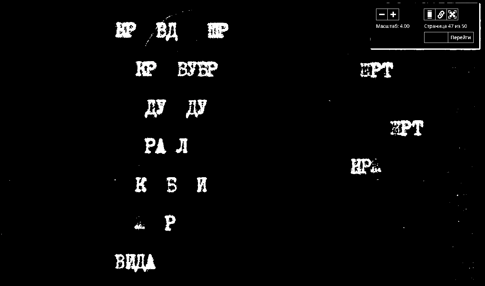

Победа над солнцем
кр вд т р
л л л
кр кр
тлп
тлмт
«Победа над Солнцем» — футуристическая опера Михаила Матюшина и Алексея Кручёных, целиком построенная на литературной, музыкальной и живописной алогичности.
Стала примером совместной работы поэтов и художников, синтеза искусств — слова, музыки и формы.
Опера повествует о том, как группа «будетлян» отправилась завоевывать Солнце. Обычно это понимается как победа передовой техники будущего над старой природой, но также присутствует и тайный мотив победы над
«солнцем русской поэзии», то есть Пушкиным, которого в то время футуристы активно сбрасывали с парохода современности. Либретто широко пользовалось заумью (оставаясь довольно понятным), музыка была хроматической и диссонансной, а оформление — карикатурным, преувеличивавшим характеристики того или иного персонажа
